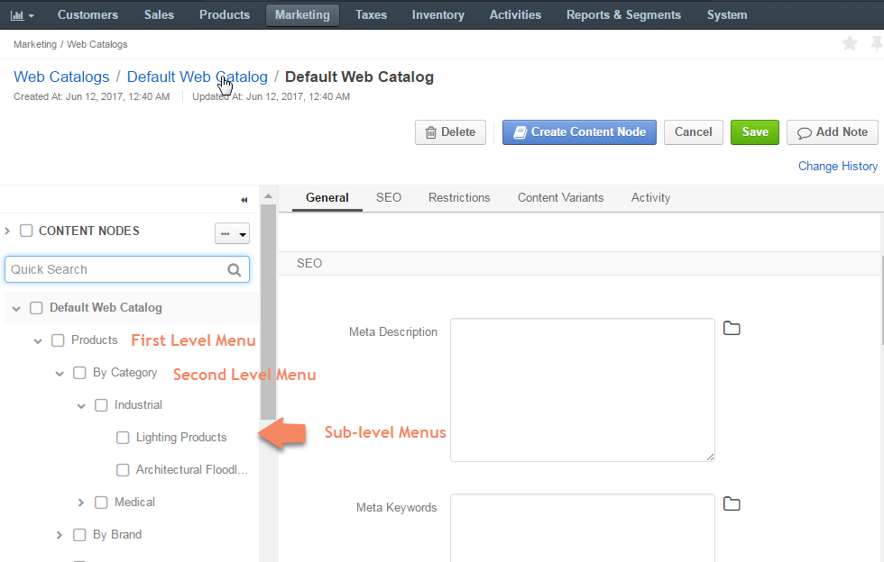
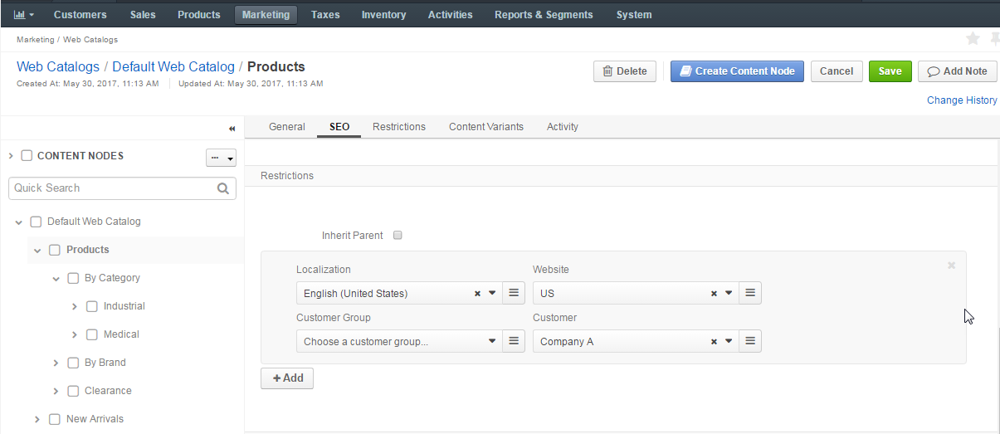
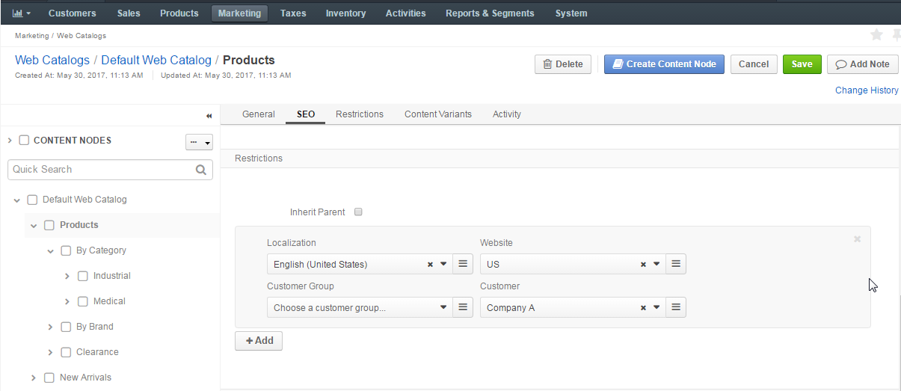
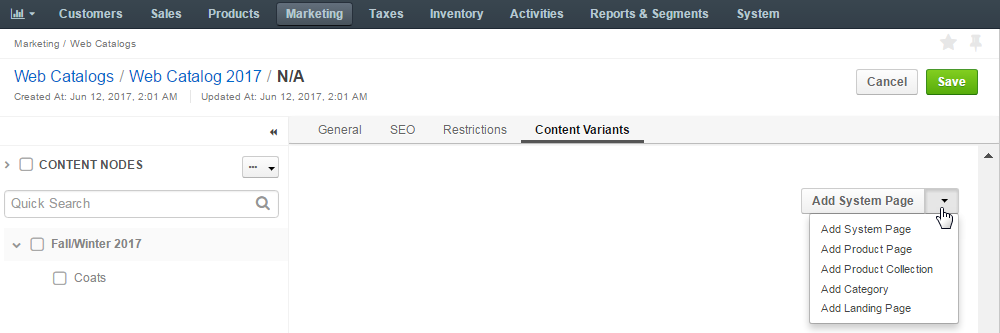

Set Up the Homepage, First Level Menu, and Sub Menus¶
Concepts¶
The homepage that is shown when a buyer navigates to the web store is configured by the very first node created in the web catalog (homepage node).
The first level of the main menu in the front store is represented by root content nodes in the management console.
Front Store:

Management Console:

Root content nodes are nested under the homepage node.
After you set up the first level of the main menu, you can set up the second level for it, as well as many other sub levels for them, depending on the structure envisioned by you for the store.
The steps for node configuration provided below apply to the homepage, main menu and sub menu content with the only difference in the way you launch the node configuration:
- For homepage node — You will be offered to fill in the homepage details once you start editing a blank content tree.
- For menu and sub-men nodes — To create a menu or sub-menu node, select the parent node you would like to place it in, and click Create Content Node.
- To launch editing the existing content node configuration, select it in the content nodes tree.
Content Node Configuration¶
To create or configure the content node in the web catalog:
In the General section, fill in the content node title.
For the homepage node, the title is mentioned in the content nodes tree in OroCommerce Management Console.
For the menu and sub-menu nodes, the title is mentioned in the content nodes tree in OroCommerce Management Console and shows as a menu or sub menu caption in your OroCommerce Front Store (depending on the level in the content tree).
If necessary, translate the title into the languages supported in your OroCommerce configuration. To manage title translations, click next to the Titles box and follow the content translation guidance here.
Set Rewrite Variant Title to override the native title of the alternative content that you are mapping to this catalog node with the content node title specified in the previous step. When the content variant has no title of their own, the option is ignored and the content node title is used.
For the menu and sub-menu nodes, enable the Slug Prototypes box. The default slug prototype is autogenerated. Edit the value to customize the default.
To ensure that slug prototype translation is localization-friendly, manage slug prototype translations: click next to the Slug Prototypes box and follow the guidance on content translation.
In the SEO section, fill in the meta description and meta keywords to help search engines show your web content to the relevant audience. Similarly to the title, meta information can also be translated.
In the Restriction section, define the visibility of the web catalog.
By default, the web catalog is displayed for any localization, on any website, and for any customer.
To make OroCommerce apply a web catalog to the front store only for the particular combination of these facts, create a restriction by selecting all or some of the following: target localization, website, and customer or customer group.
Note
Only one field must be chosen for customers at a time, either a customer group and a customer.
Warning
Never leave the restrictions for non-default variant empty. This may cause unexpected priority collision between the default and non-default variant.
For the menu and sub-menu nodes, the settings are inherited from the parent node. To modify the inherited default settings, clear the Inherit Parent box, and specify the necessary restrictions.
 

In the Content Variants section, add the default content item to be displayed on the OroCommerce front store when the node-level restriction conditions are met:
Select the type of content to be displayed on the front store from the list on the right.
Configure the content node as described in the Configure Content Variants for the Content Node section.
If necessary, create alternative content variants by selecting a content type from the list on the top right of the Content Variants section and providing the set of conditions (localization, website, customer or customer group) to restrict this variant specifically for those cases. To switch the default content variant to a different item, select it using an option to the left of the content variant name.